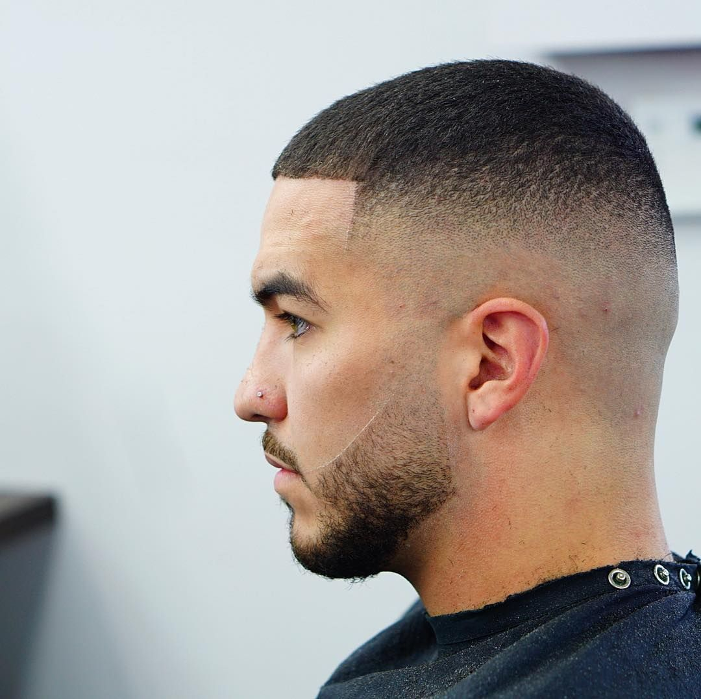

Witamy na naszej stronie!
Mateusz u fryzjera – Niespodziewana zmiana!
Dnia 13-14 listopada 2024 roku, Mateusz S. (znany również jako Stefan) postanowił dokonać nieoczekiwanej zmiany – udał się do fryzjera. Decyzja ta wywołała ogromne zdziwienie wśród jego znajomych oraz w lokalnej społeczności.

Oceny z Pracy Klasowej zaskoczyły wszystkich!
Ostatnia praca klasowa z matematyki w klasie 7b przyniosła mieszane wyniki, które wzbudziły wiele emocji zarówno wśród uczniów, jak i nauczycieli. Większość uczniów może być dumna ze swoich osiągnięć, ponieważ pojawiły się liczne oceny bardzo dobre i dobre, co świadczy o ich zaangażowaniu i systematycznej nauce. Jednak nie obyło się bez trudniejszych momentów – kilka osób uzyskało oceny niedostateczne, co wskazuje na konieczność poświęcenia większej uwagi niektórym zagadnieniom.